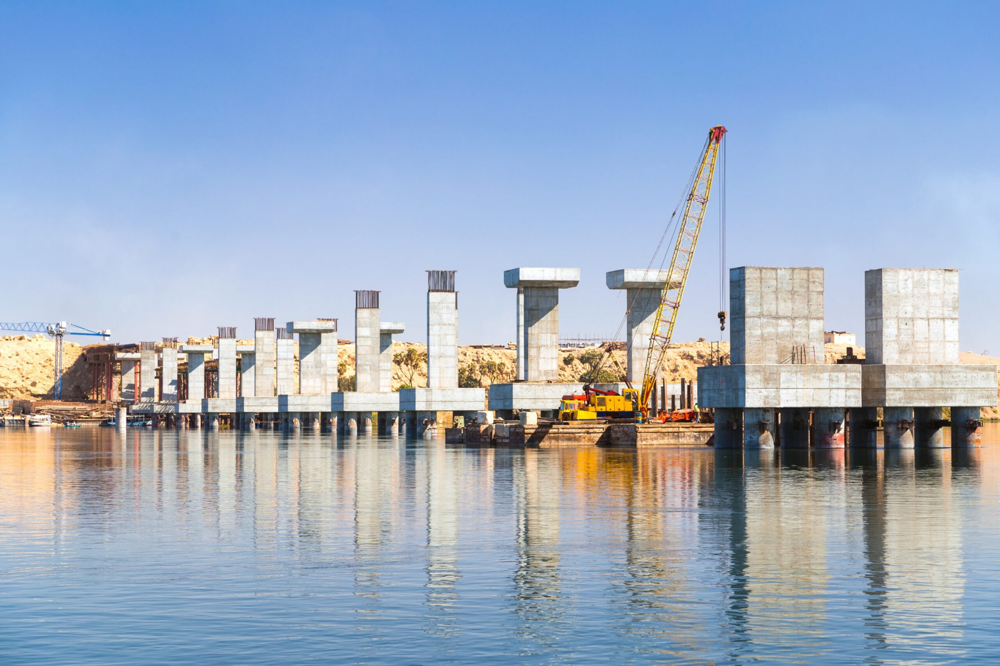
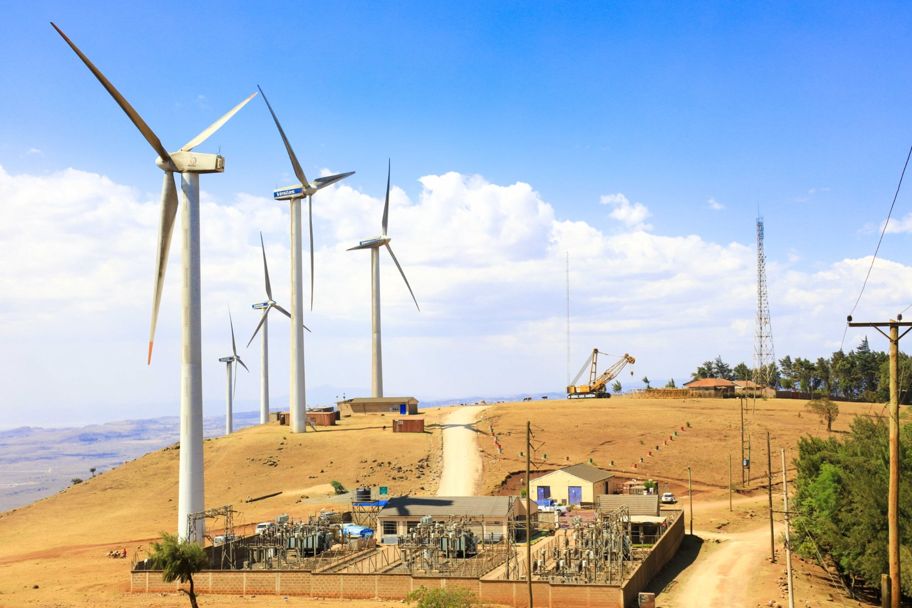

Business growth
Explore capital options to support expansion, new opportunities and the next stage of your business.
Discuss this need ↗US & INTERNATIONAL CAPITAL SOLUTIONS
Strategic funding pathways for businesses ready to move forward — from growth and expansion to major projects.
A CLEARER WAY FORWARD
The right capital can turn a sound business plan into its next chapter.
MRT Strategic Capital Solutions works with business owners, investors and project leaders to explore funding opportunities aligned with their goals, requirements and markets.
See how we can help ↗CAPITAL SOLUTIONS
A considered approach to identifying capital options for business needs at different stages of growth.
Explore capital options to support expansion, new opportunities and the next stage of your business.
Discuss this need ↗Funding pathways for eligible commercial property, development and investment-led projects.
Discuss this need ↗Consider options for acquiring the equipment, vehicles and assets that help operations scale.
Discuss this need ↗Explore ways to strengthen cash flow, manage business demands and support continuity.
Discuss this need ↗All funding is subject to eligibility, due diligence, lender or funding-partner criteria, and applicable laws and regulations. No funding outcome is guaranteed.

THE MRT APPROACH
Funding should begin with understanding — not a one-size-fits-all offer.
We start with your business, objectives, funding needs and timeline.
We consider potential routes and the information required to assess them.
Where there is a fit, we help progress the conversation with relevant funding sources.
CONNECTED OPPORTUNITIES
Supporting conversations around US and cross-border funding opportunities, subject to market access and partner requirements.
Business funding and growth opportunities.
Explore opportunities connected to Dubai and the wider UAE.
Cross-border business and investment conversations.
Opportunities assessed according to location and eligibility.
Illustrative markets only. Availability varies by funding type, jurisdiction, applicant and funding partner.
SINGAPORE & THAILAND · PROJECT FINANCE
A focused opportunity for project owners, principal developers and authorised sponsors seeking capital for viable projects.
Connecting viable projects with potential capital sources.
CAPITAL SOURCING FOR QUALIFIED PROJECTS
We are actively sourcing quality, investment-ready projects across Singapore and Thailand.
We help project sponsors identify potential capital sources aligned with their funding requirements. Our conversations begin with the project, its development stage and the intended use of funds.
Funding is subject to review, eligibility, due diligence and final approval. Restrictions apply. MRT does not guarantee funding or a funding outcome.
PROJECTS & INDUSTRIES
From established enterprises to capital-intensive projects, every opportunity starts with its own fundamentals.

Images are illustrative of sectors and project types; they do not represent confirmed MRT-funded projects.
YOUR NEXT MOVE STARTS HERE
Tell us what you’re building, where you’re operating and what kind of capital you’re looking for. We’ll start with a conversation.
Start a funding conversation ↗